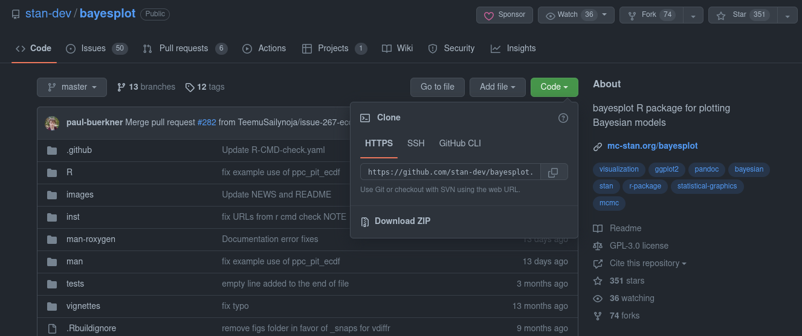
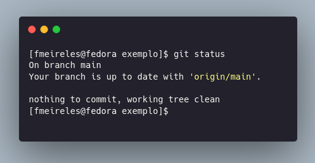

Aula 1
Apresentação do curso
Introdução
O que é Ciência de Dados? O que são modelos de aprendizado de máquina? Qual a relevância de um curso sobre isso em uma pós-graduação de Ciência Política? Essa aula de apresentação oferecerá algumas respostas a essas perguntas. Além disso, veremos alguns exemplos de aplicação de Ciência de Dados na área das Ciências Sociais, tanto na academia quanto no mercado.
Primeiras tarefas
Nosso trabalho ao longo do curso será muito mais fácil se formos capazes de versionar nossos códigos, isto é, registrar organizadamente mudanças ao longo do tempo. Por conta disso, antes de mais nada será necessário que cada aluno e aluna tenha uma conta no GitHub para usar o git – o mais famoso gerenciador de versões de código open source. Esses são os passos que deverão ser seguidos para tanto:
- Crie uma conta no GitHub clicando aqui
- Baixe e instale o
gitpara o seu sistema operacional - Aprenda a
- Clonar repositórios
- Adicionar e commitar alterações
- Subir alterações e checar status de um repo
Em IDEs mais modernas, como Rstudio e VScode, é possível fazer isso de forma simples, sem necessidade abrir o terminal. Aqui há tutoriais cobrindo os dois casos, aqui e aqui.
Para evitar ter de digitar login e senha repetidamente no git, o ideal é salvar suas credenciais. O modo de se fazer isso variará de acordo com o seu sistema operacional, mas, em geral, digitar isso no seu terminal deve funcionar:
git config --global credential.helper storeEsse método salvará suas credenciais de forma não criptografada, o que não é muito seguro. Se você usa muito git, possui códigos sensíveis e usa Windows, outra alternativa é usar:
git config --global credential.helper managerO equivalente para Mac OS X é:
git config --global credential.helper osxkeychainBásico de git
git clone
A primeira etapa para trabalhar usando versionamento de código é ter um repositório monitorado pelo git. É possível criar um do zero, mas, nesse curso, vamos seguir um caminho mais simples: clonando um repositório criado diretamente no GitHub por vocês (veremos isso em aula).
O primeiro passo, nesse caso, consiste em achar a página do repositório no GitHub e extrair sua URL .git. O print abaixo mostra como fazer isso – basta clicar em Code, em verde, e copiar a URL que aparece.

Isso feito, basta abrir seu terminal, navegar até a pasta onde você deseja salvar o repositório e executar:1
1 <URL> deve ser trocado pela URL que você copiou na etapa anterior
git clone <URL>git branch
Cada repositório no git tem vários branches, isto é, uma espécie de diretório onde cada novo código adicionado será armazenado. Com o uso de branches, é possível ter diversas versões do mesmo projeto salvas no mesmo repositório, cada uma totalmente diferente da outra caso isso seja útil.
Por padrão, o branch padrão no GitHub é nomeado main, mas é importante checar isso – vamos precisar usar o nome do branch onde vamos trabalhar pra subir código. Para obter o nome do branch atual, use:
git branchÉ uma boa prática criar um branch para fazer testes em um código, ou para testar novas funcionalidades. Fazendo isso, qualquer novo código que seja adicionado ficará pendente de revisão no GitHub, o que idealmente deve ser feito por outra pessoa. Aqui há um pequeno texto que trata sobre isso.
git add e git commit
Suponhamos que você clonou um repositório e adicionou nele um script. Como subir ele para o GitHub? Simples:
git add .Com isso, toda e qualquer alteração no repositório no seu computador será registrada para ser adicionada ao repositório principal no GitHub. Antes disso, no entanto, é necessário fazer um commit, criar e documentar um snapshot do seu código. Para isso, use:
git commit -m "Meu primeiro arquivo"Note que usamos -m para registrar uma mensagem, algo útil para sabermos o que cada snapshot tem de diferente em relação ao código anterior. É sempre uma boa prática manter esses registros.
git push e git status
Tendo feito alterações e registrado elas com commit, para subir elas para o GitHub basta rodar:
git push origin mainIsso feito, é possível checar o estado atual do repositório com:
git statusO que, se tudo der certo, deve retornar uma mensagem similar a esta abaixo.

Arquivos básicos
Por motivos de organização e de armazenamento, há dois arquivos essenciais, que todo repositório no GitHub deve ter: README.md e .gitignore.
O README.md é um arquivo de texto (em markdown, na verdade) que é exibido na página inicial de um repositório e que serve para documentar seus códigos. Considere sempre criar um e adicione informações úteis, tais como: objetivo do código, o que ele faz, de onde vieram dados, como rodar scripts, entre outros.
Já o .gitignore serve para registrar alguns arquivos que o git deverá ignorar, ou seja, que o git deixará de fora do versionamento. Isso é útil para bases de dados que, em geral, ocupam bastante espaço de armazenamento e não devem ser hospedadas no GitHub (ele possui um limite de 50mb por arquivo). Prefira sempre armazenar o código que baixa e processa os dados que você precisará, e não uma versão da base de dados já limpa.
Por que usar versionamento de código?
Have you ever:
- Made a change to code, realised it was a mistake and wanted to revert back?
- Lost code or had a backup that was too old?
- Had to maintain multiple versions of a product?
- Wanted to see the difference between two (or more) versions of your code?
- Wanted to prove that a particular change broke or fixed a piece of code?
- Wanted to review the history of some code?
- Wanted to submit a change to someone else’s code?
- Wanted to share your code, or let other people work on your code?
- Wanted to see how much work is being done, and where, when and by whom?
- Wanted to experiment with a new feature without interfering with working code?
In these cases, and no doubt others, a version control system should make your life easier.
To misquote a friend: A civilised tool for a civilised age.
Materiais de apoio
Terminal
É muito comum entrar no mundo da Ciência de Dados, ou da programação com R ou Python, sem saber usar o terminal – a famosa telinha preta de onde é possível executar uma série de funções e comandos em bash. Saber usá-lo de forma eficiente, no entanto, é algo útil para automatizar tarefas, instalar dependências necessárias para o funcionamento de alguns softwares e, também, trabalhar com git.
Caso você precise preencher essa lacuna, estude e pratique o conteúdo desse workshop:
Git e GitHub
Para praticar ou aprender a usar recursos mais avançados do git e do GitHub, vale consultar: